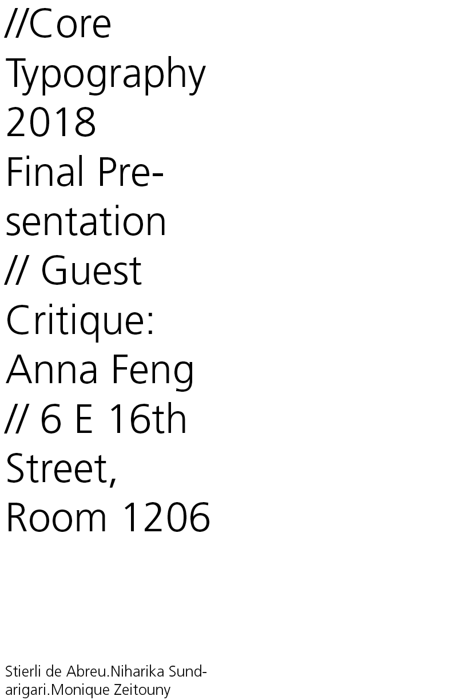
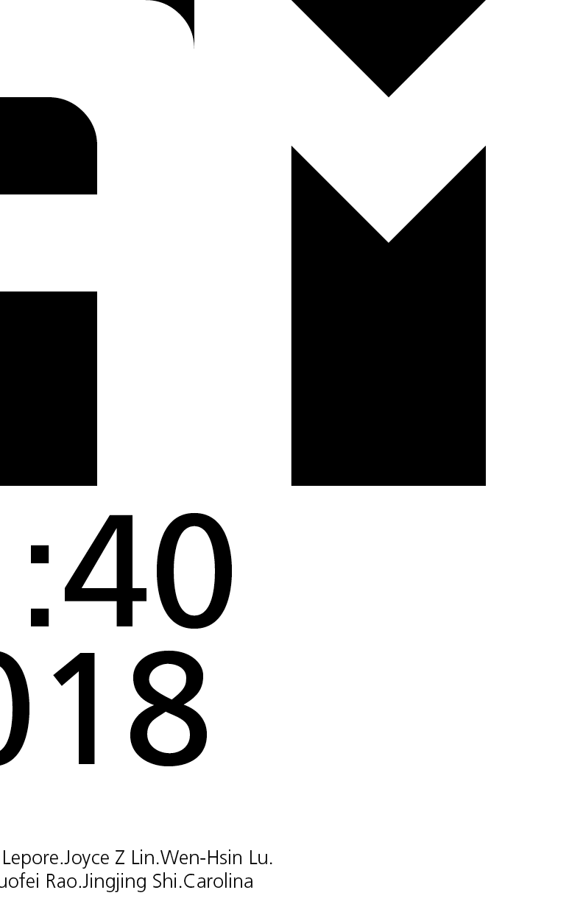
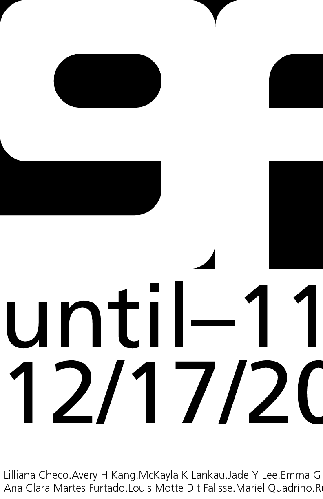

At the end of my core Typography class, we hosted a critique session with guest Anna Feng to show the work
we had produced during the semester. We were asked to each create an 11x17 portrait poster promoting the
event and to think about the physicality of the poster.
I created the poster in a tryptique format to create a horizontal layout with portrait 11x17 paper and decided
to juxtapose a bold font, Negative(that I had previously made) and Frutiger, a delicate sans serif to have
the sole focus be on the negative space created by the font Negative.



I also decided to create movement within the poster given that it was going to be displayed on a pin-board and
it needed to stand out among other print media. Given this I chose to print this project on iridescent paper
to have the poster catch the light when it moves.
I made my own custom font called Negative. It is a mono-width font that uses rectangles and rounded in
triangles to create the outline of the letters in negative space. The font is presented in a foldable poster
that plays on it’s almost illegible nature with an abstraction if it’s name and a find the word game.